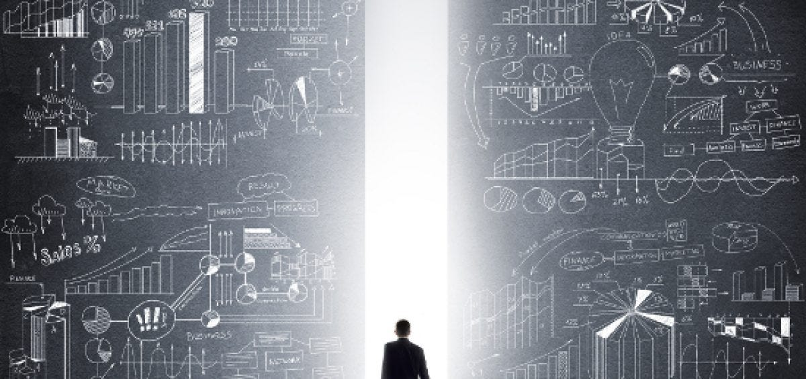

Change and knowledge acquisition rate
The link between AI systems and Scientists


Our rate of knowledge acquisition plays an important role in the number of problems we can solve and those we are aware of and this rate is related to the level of dissemination of information in the environment we are part of. We have seen and learned how writing increased the level of dissemination of information and it played such an important role in our ability to solve problems because it eased knowledge acquisition. Gutenberg and movable types innovation accelerated the dissemination of information by making possible mass reproduction of writings what made it possible for us human beings to be able to increase our rate of knowledge acquisition and helped us solve many more problems than we used to what introduced us to a new era of machines that we call the industrial era with its suits of innovations in terms product development and productivity improvement. This cluster of innovations, I mean writing and mass printing and everything around written communication, is at the core of almost all the benefits we got from our industrialized world but I think not only because of our increased rate of knowledge acquisition but also our level of connectedness that increased the amount and rate of ideas shared between us. We used to forget how positive and impactful sending a letter to someone is because now we can send an instant message right now with our fingers due to the computer revolution.
Of course with the rise of computers coupled with the power of the internet, we are starting to ask ourselves if we are not living in an era of over dissemination of information but here over dissemination can simply and positively means more possible sets of knowledge to be acquired by each individual. the problem is that acquisition of knowledge requires classification and categorization of information that make it easy for us to grasp what is important to know and learn and to filter out the noisy and self-uninteresting parts. When we were living into the past era of on paper written communication this responsibility of classifying, categorizing, and filtering information was at the hand of specialists, journalists, editors, scientists, print professionals, and others, I simply mean a small set of persons. The cluster of digital innovation( computer, and internet things) tried with success to put this responsibility in the hand of everyone who wants with user-generated content applications like Wikipedia that populate the internet but I think that we would be crazy to think that we human beings only could make order in this very big amount of information that we have created and stored. We will for sure need artificial intelligence to help us in this task and it is already proving itself good at this task of processing information for us to acquire more knowledge at an ever more increased rate. Of course, there are these concerns about the monopoly on information and the risk of its manipulation by a very small set of giant tech companies that became a cluster of holders of information but like how machines helped us produce more and better products with the industrial revolution computer will help us produce more and better information what in turn will give us more knowledge. For most of the problems that we are facing now like the problem with carbon, What we are asking ourselves is will we be able to have a solution given the actual possibilities of information gathering and our rate of knowledge acquisition. To answer this question knowing the impact of knowledge acquisition in problem-solving and conversion of knowledge into practical solutions is crucial and there are futurists and innovation diffusion specialists who tackled this problem of the impact of knowledge on ideas generation, problem-solving, and innovations… Maybe looking at what we have solved and achieved in the past with the amount of knowledge we had on hand could help us know what we will be able to do with actual problems, that’s the path of some innovation diffusion specialists or maybe that’s looking and trying to imagine future possibilities that will unlock actual solutions and capabilities this is the path of futurists.
The relation between the amount of knowledge acquired and the number of problems solved with this knowledge is an obvious relation and everything that I am describing here lay on the ground of the effects of the law of power and networks. Power and Network are now crucial for problem-solving and change and many unsolved problems of our actual society are not solved only because of knowledge but more because of status and roles conservation from some of its members and I should agree that it is not easy to leave behind a status or/and a role and this is more true if it's honestly acquired. I think that most big tech companies investors, CEOs, and workers have honestly acquired the status and roles they hold actually and there are also politicians and industrialists who are like them. Fear of change is a natural human behavior and let’s not forget that fear played biologically an important role in making us connected homo sapiens and we should acknowledge that be the problem we are facing now solved or not we are always headed to shifts of status and roles from organizations to organizations, people to people, organizations to people and vis versa.
I really believe in the power of knowledge for shedding light on our future what makes me confident is that I have learned how in the past connected scientists became more productive at highlighting theories thanks to the power of networks, horses, letters, rails, roads, and now fiber and wave. These past highlighted theories create many practical solutions on top of which our connected world is built.
I don't know if AI systems will be smarter enough to act like human beings but I am almost sure that AI systems will be the perfect assistants of scientists like you and me, helping us more knowledge at an even more increased rate what will, in turn, let us solve more and more problems of our society and increase our problem-solving capability like how machines increased our productivity. AI will make scientists and every one of us more powerful at understanding things, making discoveries, and proving theories and all of these could lead to more practical solutions that will be profitable to our society.
The link between AI systems and Scientists is a connection that we should care about if we want to solve most of the world problems we are facing now and why not a world with an economy driven entirely by a zero-carbon emission system.